身心成長善接引
學插花、學畫畫，也能改變一個家？

先別急著下結論，讀完再說說你的想法～
這一篇講社會教育推廣中心（社教中心）：不分年齡、不限學歷，人人都能來學花道、手語、畫畫、素食烹飪。
每堂課都有隨班志工陪著；最後是一對母女，在這裡重新學會相處。
下面是原書的節錄，紅色底線是我們替你標出的轉折點。
讀之前：你覺得大人去上興趣班，最大的收穫是什麼？
海外第三間
慈濟大學把社會教育，帶到了吉隆坡。閱讀引導
2003年1月，慈濟大學副校長張芙美、社教中心主任劉佑星與組長黃鳳月等一行人到新加坡、馬來西亞參訪，考察開辦社教中心的可行性。
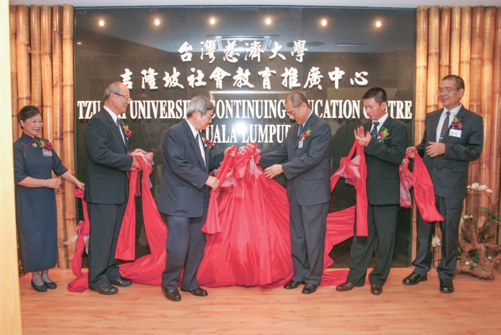
正式成立，是慈濟在海外的第三間社教中心。
慈濟大學的課了！
2014年5月，吉隆坡靜思堂落成，社教中心隨即成立。
發心付出，貢獻專業知識，主動請求來吉隆坡靜思堂社教中心授課，甚至不計薪酬

還不收錢？
規劃多元的教育課程與活動，不分年齡、不限學歷，平等地提供社會大眾終身學習的機會。
一個麵包的關懷
社教中心和別的學習中心，最大的不同。閱讀引導
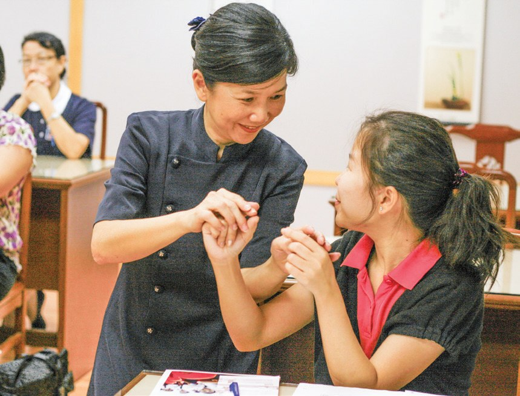
社教中心除了有專業的師資外，與其他學習中心最大不同之處在於，每堂課都有隨班志工的陪伴。
常為了趕來上課而無法用餐，志工總會貼心地為他們準備麵包或餅乾等點心

志工準備了麵包。
在隨班志工用心付出的協助與關懷下，許多學員與教師深受感動而加入慈濟成為志工。
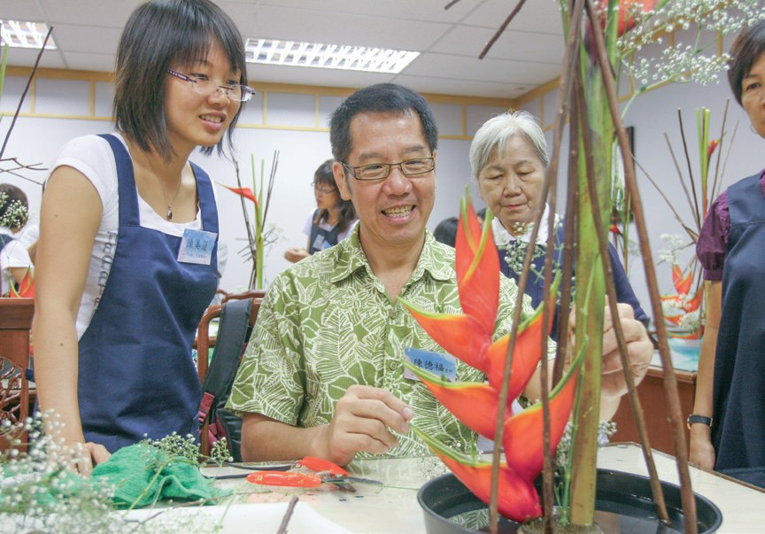
花、手、畫、菜
花道、手語、樸實藝術、素食烹飪。閱讀引導
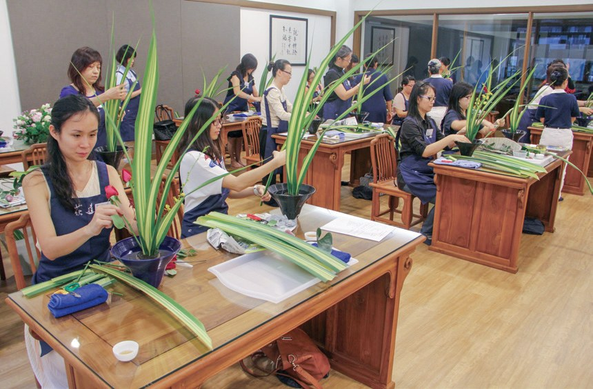
在忙碌的生活中，能停下腳步，從插花的靜謐氛圍中，展開花草樹木與生命的對話，進而沉澱心靈。
上人在訪視時常碰到聾啞的病苦人士與其家屬，因無溝通方式，而無法深入瞭解他們的需求。
人希望透過手語讓心與心相連，破除語言的藩籬，彼此意會。

是心的語言。
教師童薇凌也在課程中加入以馬來文為主的基礎手語，成為社教中心手語課程的一大特色。
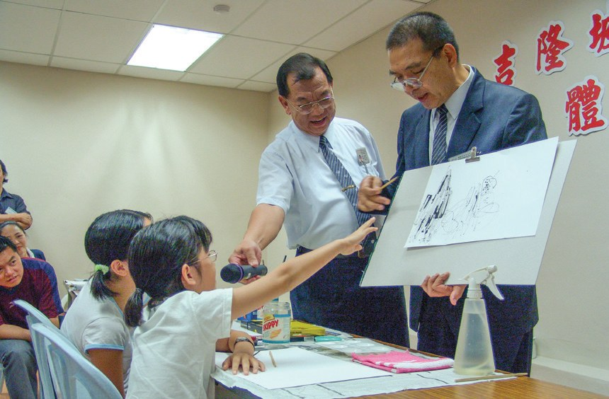
因為心情很低落，所以用了很多灰色或深暗的顏色；畫到一半想起快樂的時光，就加了一些明亮的色彩，最後完成了一滴富含情感的眼淚畫作。
「這滴眼淚的色彩反映了這些年來的心境。」
學員楊玉葉說・p.455都畫進一滴眼淚。
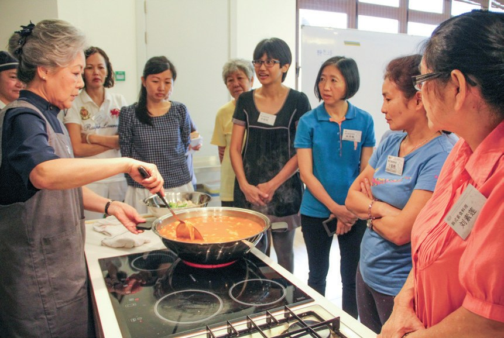
而大馬美食烹飪課程，則呈現客家釀豆腐、素食肉骨茶、爪哇麵、馬來式涼拌芒果沙拉、福建麵、滷麵

也能做！
大愛列車和雲端課
走出去看苦難；封城了，就在線上學。閱讀引導
拼布工作坊學員鄧修團阿嬤平時喜愛拼製被子，不戴老花眼鏡也可穿針引線。
2007年起，社教中心開辦「大愛列車，送愛之旅」課程，帶領學員走出教室，拓展視野，見苦知福。
讓書法班的師生發揮所學，製作春聯與院友結緣。

就寫春聯送人。
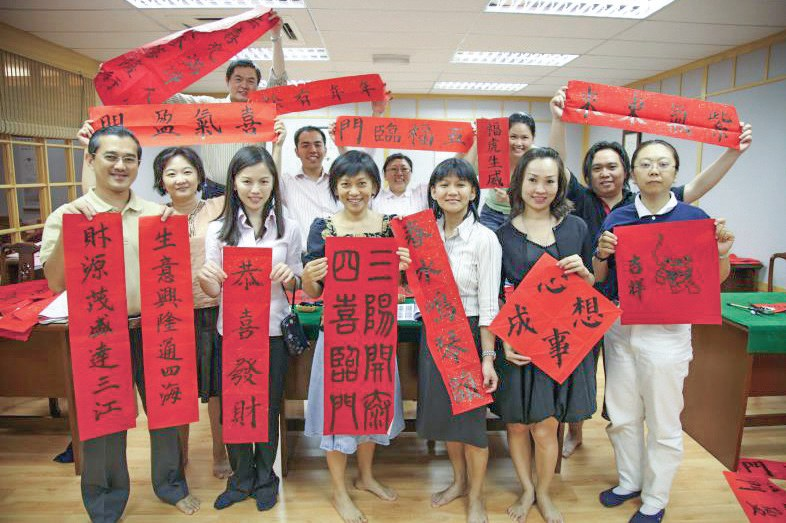
2021年疫情再度嚴峻，從5月28日再度落實行動管制令，課程必須全面暫停。
猜一猜閱讀引導
疫情期間開的線上禪繞課，第一學期吸引了多少學員報名？
數百位學員跟著鏡頭一起比劃，藉著優美的旋律，充滿溫度的歌詞字字句句入耳入心，讓人專注而安定
老師、學員、母女
教的人、學的人，都被改變了。閱讀引導
因此他在2011年受證慈誠，成為吉隆坡社教中心第一位受證的老師。
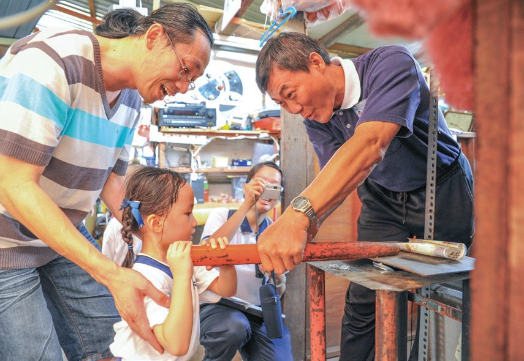
「……來慈濟不只是教瑜珈而已，收穫最多的還是自己，因此走入慈濟永不後悔！」
瑜珈老師林道方表示・p.460身為基督徒的她，沒有因為宗教差異起退轉心，反而更加堅定修行的信念與道路。
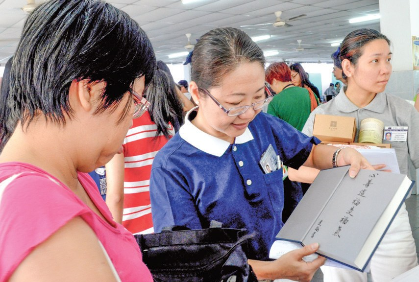
也成了慈濟委員！
黃媄翔煩惱萬分，不知如何應對與女兒之間的問題，也總是自責教女無方，於是四處拜佛問卦，甚至在佛前許下「願當義工」的承諾。
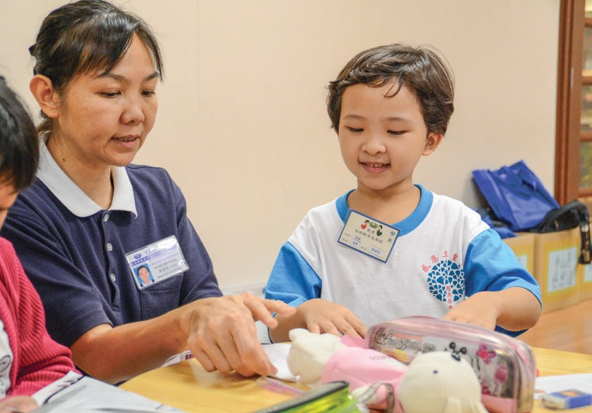
邱郁鈴表示，「當影響不了別人時，先改變自己」這句靜思語，讓她決定改變自己，不再和哥哥吵架。
媽媽呢？
黃媄翔重新思考對孩子的教育方式，除了不再採用打罵教育，也開始尊重、聆聽女兒的想法，因而逐漸改善了親子關係。
「如果自己不懂，怎能當課程的隨班志工？」
黃媄翔自問・p.463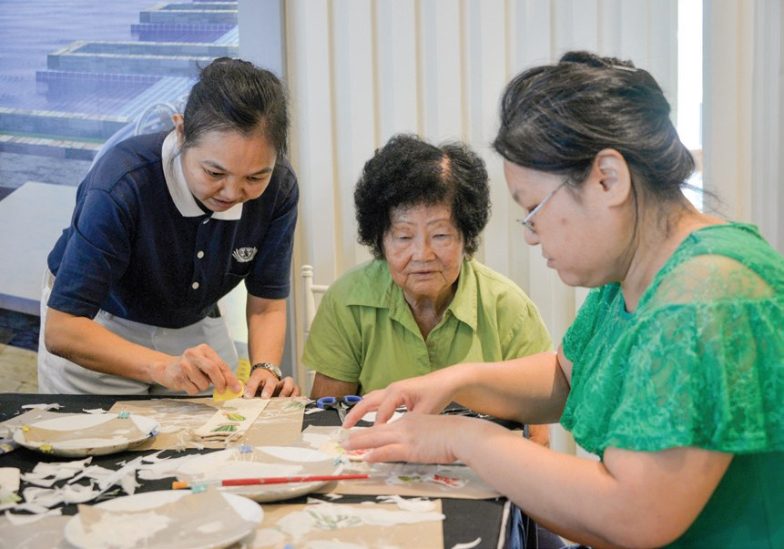
履踐了當年在佛前許下「當義工」的心願。
真的做到了。
是生活中能實用的法，讓學員瞭解如何持家、理家，懂得過生活
上人開示・p.464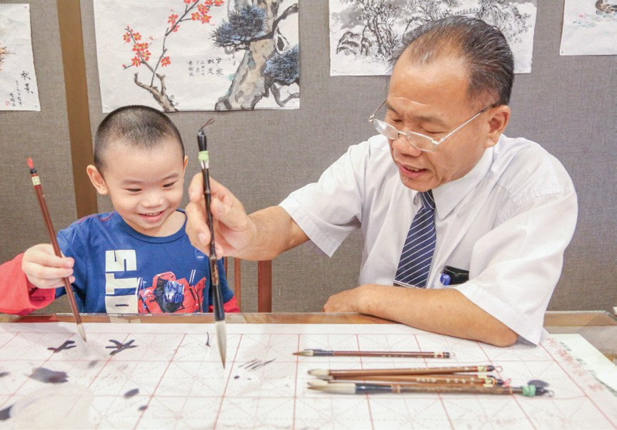
停一停：誰讓你記住了？閱讀引導
選一位你印象最深的人。沒有標準答案。
有人把心情畫成眼淚，有人教瑜珈反而收穫最多，有人在佛前許願當義工。哪一位讓你最有感覺？

一起回頭看看吧～
回望
依本章原文整理，每一條都標了原書頁碼。閱讀引導
背後原因
為什麼學員會加入慈濟

小川只是來上興趣班，怎麼後來成了志工？
- 人人能學
不分年齡、不限學歷，平等地提供終身學習的機會。p.451
- 隨班志工
每堂課都有隨班志工的陪伴。p.452
- 加入慈濟
許多學員與教師深受感動而加入慈濟成為志工。p.452
後續發展
社教中心一路走來

小禾從考察到線上課，經過了多少年？
- 2003.1
慈濟大學到馬來西亞考察。p.449
- 2005.8.27
吉隆坡社教中心成立。p.450
- 2006.11
開辦第一期手語課程。p.454
- 2007
開辦「大愛列車」課程。p.457
- 2014.5
吉隆坡靜思堂社教中心成立。p.450
- 2021.6
聯合展開線上課程。p.457–458
一對母女的轉變
以前和後來
小川母女倆上課之後，有什麼不同？
- 管教嚴格，要求完美尊重、聆聽女兒的想法p.462–463
- 演變成打罵教育不再採用打罵教育p.462–463
- 常藉故不上學變得開朗愛笑p.462–463
- 在佛前許願當義工2012年受證為慈濟委員p.462–463
以上只整理本章寫到的事；書裡沒寫到的，我們不替它下結論。
回頭看讀前的選擇閱讀引導
學員楊玉葉把心情畫成一滴眼淚（p.455）；許多學員受隨班志工感動加入慈濟（p.452）；邱郁鈴在社教中心逐漸打開心房（p.463）。手藝、朋友、心情，社教中心三樣都給了。
後來算不算還了願？
只有你自己看得到喔！
準備好了就一起出發～